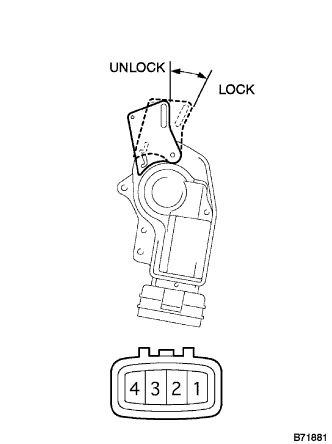
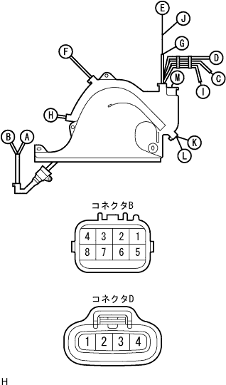
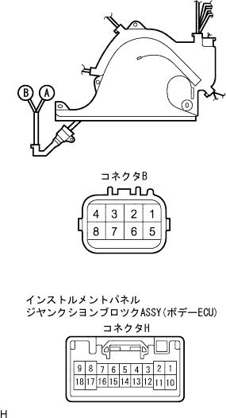

Electric Door Tsukushi System Sliding Door Only Rotoki, I can't do it |
| Step 1 | Front de arock actuator Assemable LH single inspection |
Door lock operation inspection and position switch conduct inspection
|  |
Inspect the door lock activation and the conductor of the position switch when the combined voltage is applied between the motor terminals in the door.
| connection | Action | Standards (Paiting Switch) |
|---|---|---|
| Combination Plus ← → 2 terminals Completed mixture ← → 3 terminals | Lock | 1 terminal ← → 4 No terminal conduction |
| Combat Plus ← → 3 terminals Combine minus ← → 2 terminals | UNLOCK | 1 terminal ← → 4 terminal conduction |
|
| ||||
| OK | |
| Step 2 | Front door wire LH single inspection |
Conduction inspection
Separate the connector B and D of the front door wire LH LH.
|  |
Use SST (Toyota Electrical Tester) to check the conversation between each terminal of the front door wire LH.
| Measurement number | standard |
|---|---|
| B6 ← → D3 | There is an conductor |
| B5 ← → D2 | There is an conductor |
|
| ||||
| OK | |
| Step 3 | Wire harness inspection |
Conduction inspection
Separate the connector B of the front door wire LH LH and the connector H of the body ECU.
|  |
Use SST (Toyota Electrical Tester) to inspect the conduction between each terminal connector.
| Terminal number (Door wire ← → body -ECU) | standard |
|---|---|
| B6 ← → H18 (Act-) | There is an conductor |
| B5 ← → H8 (Act+) | There is an conductor |
|
| ||||
| OK | ||
| ||